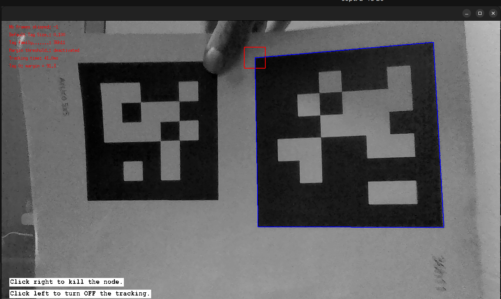
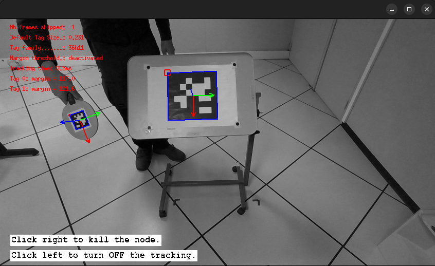

AprilTag tutorial
This is a tutorial for the visp_apriltag package. The documentation of the AprilTag and ArUco tags detector provided
by ViSP can be found here.
ViSP documentation also provides step-by-step tutorials to progressively learn how to use the detector
here .
Consequently, this tutorial will not focus on explaining the meaning of the different parameters of the
detector, but instead focus on the specificities on how to use the visp_apriltag package.
We provide two examples on how to use the visp_apriltag package: one that works with a live camera thanks to
the v4l2_camera package, and one that uses a pre-recorded rosbag. We will first have a look to the tutorial
that uses a live camera.
Tutorial using a live camera
Purpose of this tutorial
The purpose of this tutorial is to have a simple situation where we assume that all the tags have the same dimension.
How to launch it
If you compiled the packages, you have to source the workspace in which you have compiled the packages.
Otherwise, if you installed the packages using the package manager, you only have to source the /opt/ros/${ROS_DISTRO}/setup.bash
file (or one of the other setup files if you are not using bash).
Then you can run:
ros2 launch visp_tk_tutorials apriltag_tracker_live_v4l_launch.py
If you get the following error when launching the launch file, it is because your camera has not been calibrated yet. See for instance the documentation of the camera_calibration package to see how to calibrate your camera.
[camera.v4l2_camera]: using default calibration URL
[v4l2_camera_node-1] [INFO] [camera.v4l2_camera]: camera calibration URL: file:///home/${USER}/.ros/camera_info/integrated_webcam_hd:_integrate.yaml
[v4l2_camera_node-1] [ERROR] [camera_calibration_parsers]: Unable to open camera calibration file [/home/${USER}/.ros/camera_info/integrated_webcam_hd:_integrate.yaml]
[v4l2_camera_node-1] [WARN] [camera.v4l2_camera]: Camera calibration file /home/${USER}/.ros/camera_info/integrated_webcam_hd:_integrate.yaml not found
[visp_apriltag_node-2] [INFO] [tracker_apriltag]: Receive image
[visp_apriltag_node-2] [INFO] [tracker_apriltag]: Waiting for camera info...
[visp_apriltag_node-2] terminate called after throwing an instance of 'std::runtime_error'
[visp_apriltag_node-2] what(): uncalibrated camera
The launch file accepts different arguments. To have the list and the explanations related to the arguments, please run:
ros2 launch visp_tk_tutorials apriltag_tracker_live_v4l_launch.py --show-args
When you start the launch file, the detector will be turned on, and you should see the result of
the detection on screen. It should look like the following image (please be careful of using the same tag
family than the one set as the launch argument tag_family):


Code explanation
Let’s have a look at apriltag_tracker_live_v4l_launch.py:
1from launch import LaunchDescription
2from launch.actions import DeclareLaunchArgument, RegisterEventHandler, EmitEvent, LogInfo
3from launch.events import Shutdown
4from launch.event_handlers import (
5 OnProcessExit
6)
7from launch.substitutions import LaunchConfiguration
8from launch_ros.actions import ComposableNodeContainer
9from launch_ros.descriptions import ComposableNode
10from launch_ros.parameter_descriptions import ParameterValue
11
12
13def generate_launch_description():
14
15 # ------------------------------------------------------------------ #
16 # Launch arguments #
17 # ------------------------------------------------------------------ #
18 declared_args = [
19 # BEGIN_V4L2_ARGUMENTS
20 DeclareLaunchArgument(
21 "video_device",
22 default_value="/dev/video0",
23 description="Video device path (e.g. /dev/video0, /dev/video2 ...)",
24 ),
25 DeclareLaunchArgument(
26 "camera_namespace",
27 default_value="camera",
28 description="Namespace for the v4l2_camera node",
29 ),
30 DeclareLaunchArgument(
31 "camera_info_url",
32 default_value="",
33 description="URL to the camera calibration file (e.g. file:///path/to/camera.yaml).",
34 ),
35 # END_V4L2_ARGUMENTS
36 # BEGIN_APRILTAG_ARGUMENTS
37 DeclareLaunchArgument(
38 "tag_family",
39 default_value="36h11",
40 description="AprilTag family (e.g. 36h11, 25h9, 16h5, circle21h7 ...)",
41 ),
42 DeclareLaunchArgument(
43 "tag_size_keys",
44 default_value="[-1]",
45 description="List of tag IDs for which a size is specified. -1 = default for all.",
46 ),
47 DeclareLaunchArgument(
48 "tag_size_values",
49 default_value="[0.1]",
50 description="Tag sizes in meters, matched by index with tag_size_keys.",
51 ),
52 DeclareLaunchArgument(
53 "id_published",
54 default_value="-1",
55 description="ID of the tag whose pose is forwarded on /pose (-1 = none).",
56 ),
57 DeclareLaunchArgument(
58 "pose_method",
59 default_value="best_residual_virtual_vs",
60 description="Pose estimation method",
61 ),
62 DeclareLaunchArgument(
63 "display_tag",
64 default_value="true",
65 description="Display the detected tags in a ViSP window",
66 ),
67 DeclareLaunchArgument(
68 "frame_size_ratio",
69 description="Length of the axes of the displayed object frame, as a fraction of the object diameter (diagonal of the bounding box of the model, or of the tag). The axes are never shorter than 30 pixels.",
70 default_value="0.3"
71 ),
72 DeclareLaunchArgument(
73 "frame_thickness",
74 description="Thickness, in pixels, of the axes of the displayed object frame.",
75 default_value="2"
76 ),
77 # END_APRILTAG_ARGUMENTS
78 ]
79
80 # ------------------------------------------------------------------ #
81 # v4l2_camera component #
82 # ------------------------------------------------------------------ #
83 # BEGIN_V4L2_NODE
84 # image_size must be a list of Python integers, this no LaunchConfiguration
85 # for this parameter (the integer_array type is strict in ROS 2)
86 v4l2_camera_node = ComposableNode(
87 package="v4l2_camera",
88 plugin="v4l2_camera::V4L2Camera",
89 name="v4l2_camera",
90 namespace=LaunchConfiguration("camera_namespace"),
91 parameters=[
92 {
93 "video_device": LaunchConfiguration("video_device"),
94 "image_size": [640, 480], # native integers, no substitution
95 "time_per_frame": [1, 30], # idem : 1/30 s <=> 30 fps
96 "camera_info_url": LaunchConfiguration("camera_info_url"),
97 }
98 ],
99 # The images are passed to the tracker without going through DDS
100 extra_arguments=[{"use_intra_process_comms": True}],
101 )
102 # END_V4L2_NODE
103
104 # ------------------------------------------------------------------ #
105 # AprilTag tracker component #
106 # ------------------------------------------------------------------ #
107 # BEGIN_APRILTAG_NODE
108 # The BaseTracker of visp_tracker_common use its own parameters for some topics
109 # rgb_camera_info_topic_name <=> camera_info topic
110 # rgb_image_topic_name <=> image topic
111 # The tracker enables intra-process communication on its image subscription by itself
112 apriltag_tracker_node = ComposableNode(
113 package="visp_apriltag",
114 plugin="visp_apriltag::AprilTagTracker",
115 name="tracker_apriltag",
116 parameters=[
117 {
118 "rgb_image_topic_name": ["/", LaunchConfiguration("camera_namespace"), "/image_raw"],
119 "rgb_camera_info_topic_name": ["/", LaunchConfiguration("camera_namespace"), "/camera_info"],
120 "tag_family": LaunchConfiguration("tag_family"),
121 "tag_size_keys": LaunchConfiguration("tag_size_keys"),
122 "tag_size_values": LaunchConfiguration("tag_size_values"),
123 "id_published": LaunchConfiguration("id_published"),
124 "pose_method": LaunchConfiguration("pose_method"),
125 "display_tag": LaunchConfiguration("display_tag"),
126 "frame_size_ratio": ParameterValue(LaunchConfiguration("frame_size_ratio"), value_type=float),
127 "frame_thickness": ParameterValue(LaunchConfiguration("frame_thickness"), value_type=int),
128 "initial_tracking_status": True
129 }
130 ],
131 )
132 # END_APRILTAG_NODE
133
134 # ------------------------------------------------------------------ #
135 # Component container #
136 # ------------------------------------------------------------------ #
137 # BEGIN_CONTAINER
138 # Both components are loaded in the same process, so that the images (640x480 RGB, about 1 MB each)
139 # do not go through DDS. The container must be single-threaded: the ViSP displays used by the tracker
140 # must always be used from the thread that created them.
141 container = ComposableNodeContainer(
142 name="apriltag_container",
143 namespace="",
144 package="rclcpp_components",
145 executable="component_container",
146 composable_node_descriptions=[v4l2_camera_node, apriltag_tracker_node],
147 output="screen",
148 emulate_tty=True,
149 )
150 # END_CONTAINER
151
152 # BEGIN_SHUTDOWN
153 shutdown_handler = RegisterEventHandler(
154 OnProcessExit(
155 target_action=container,
156 on_exit=[
157 LogInfo(msg=("The container was closed, turning off the launch file")),
158 EmitEvent(event=Shutdown(
159 reason="container closed"))
160 ]
161 )
162 )
163 # END_SHUTDOWN
164
165 return LaunchDescription(declared_args + [container, shutdown_handler])
We will break it down to better understand it.
First, we begin by declaring the parameters that will be needed by the v4l2_camera node. See the
v4l2_camera documentation for
more details on these parameters.
20 DeclareLaunchArgument(
21 "video_device",
22 default_value="/dev/video0",
23 description="Video device path (e.g. /dev/video0, /dev/video2 ...)",
24 ),
25 DeclareLaunchArgument(
26 "camera_namespace",
27 default_value="camera",
28 description="Namespace for the v4l2_camera node",
29 ),
30 DeclareLaunchArgument(
31 "camera_info_url",
32 default_value="",
33 description="URL to the camera calibration file (e.g. file:///path/to/camera.yaml).",
34 ),
Then, we declare the parameters of the visp_apriltag node. See
visp_apriltag documentation
for a detailed explanation of its parameters.
37 DeclareLaunchArgument(
38 "tag_family",
39 default_value="36h11",
40 description="AprilTag family (e.g. 36h11, 25h9, 16h5, circle21h7 ...)",
41 ),
42 DeclareLaunchArgument(
43 "tag_size_keys",
44 default_value="[-1]",
45 description="List of tag IDs for which a size is specified. -1 = default for all.",
46 ),
47 DeclareLaunchArgument(
48 "tag_size_values",
49 default_value="[0.1]",
50 description="Tag sizes in meters, matched by index with tag_size_keys.",
51 ),
52 DeclareLaunchArgument(
53 "id_published",
54 default_value="-1",
55 description="ID of the tag whose pose is forwarded on /pose (-1 = none).",
56 ),
57 DeclareLaunchArgument(
58 "pose_method",
59 default_value="best_residual_virtual_vs",
60 description="Pose estimation method",
61 ),
62 DeclareLaunchArgument(
63 "display_tag",
64 default_value="true",
65 description="Display the detected tags in a ViSP window",
66 ),
67 DeclareLaunchArgument(
68 "frame_size_ratio",
69 description="Length of the axes of the displayed object frame, as a fraction of the object diameter (diagonal of the bounding box of the model, or of the tag). The axes are never shorter than 30 pixels.",
70 default_value="0.3"
71 ),
72 DeclareLaunchArgument(
73 "frame_thickness",
74 description="Thickness, in pixels, of the axes of the displayed object frame.",
75 default_value="2"
76 ),
The important thing to notice is that the behavior of the visp_apriltag node if the launch file is launched
without any arguments is to consider that all the tags have a size of 0.1 meter and that the node will not publish
any messages on the pose topic.
Then, we create the v4l2_camera node as a component, using some launch arguments and some hard-coded values
for its parameters. use_intra_process_comms permits to pass the images to the tracker without going through DDS:
84 # image_size must be a list of Python integers, this no LaunchConfiguration
85 # for this parameter (the integer_array type is strict in ROS 2)
86 v4l2_camera_node = ComposableNode(
87 package="v4l2_camera",
88 plugin="v4l2_camera::V4L2Camera",
89 name="v4l2_camera",
90 namespace=LaunchConfiguration("camera_namespace"),
91 parameters=[
92 {
93 "video_device": LaunchConfiguration("video_device"),
94 "image_size": [640, 480], # native integers, no substitution
95 "time_per_frame": [1, 30], # idem : 1/30 s <=> 30 fps
96 "camera_info_url": LaunchConfiguration("camera_info_url"),
97 }
98 ],
99 # The images are passed to the tracker without going through DDS
100 extra_arguments=[{"use_intra_process_comms": True}],
101 )
Then, we create the visp_apriltag node as a component, using some launch arguments and some hard-coded values
for its parameters:
108 # The BaseTracker of visp_tracker_common use its own parameters for some topics
109 # rgb_camera_info_topic_name <=> camera_info topic
110 # rgb_image_topic_name <=> image topic
111 # The tracker enables intra-process communication on its image subscription by itself
112 apriltag_tracker_node = ComposableNode(
113 package="visp_apriltag",
114 plugin="visp_apriltag::AprilTagTracker",
115 name="tracker_apriltag",
116 parameters=[
117 {
118 "rgb_image_topic_name": ["/", LaunchConfiguration("camera_namespace"), "/image_raw"],
119 "rgb_camera_info_topic_name": ["/", LaunchConfiguration("camera_namespace"), "/camera_info"],
120 "tag_family": LaunchConfiguration("tag_family"),
121 "tag_size_keys": LaunchConfiguration("tag_size_keys"),
122 "tag_size_values": LaunchConfiguration("tag_size_values"),
123 "id_published": LaunchConfiguration("id_published"),
124 "pose_method": LaunchConfiguration("pose_method"),
125 "display_tag": LaunchConfiguration("display_tag"),
126 "frame_size_ratio": ParameterValue(LaunchConfiguration("frame_size_ratio"), value_type=float),
127 "frame_thickness": ParameterValue(LaunchConfiguration("frame_thickness"), value_type=int),
128 "initial_tracking_status": True
129 }
130 ],
131 )
Both components are loaded in the same component container, i.e. in the same process. The container must be single-threaded since the ViSP displays used by the tracker must always be used from the thread that created them:
138 # Both components are loaded in the same process, so that the images (640x480 RGB, about 1 MB each)
139 # do not go through DDS. The container must be single-threaded: the ViSP displays used by the tracker
140 # must always be used from the thread that created them.
141 container = ComposableNodeContainer(
142 name="apriltag_container",
143 namespace="",
144 package="rclcpp_components",
145 executable="component_container",
146 composable_node_descriptions=[v4l2_camera_node, apriltag_tracker_node],
147 output="screen",
148 emulate_tty=True,
149 )
Finally, we ask to stop all the nodes once the container is closed, which happens when the visp_apriltag
tracker is killed by a right click on the window.
153 shutdown_handler = RegisterEventHandler(
154 OnProcessExit(
155 target_action=container,
156 on_exit=[
157 LogInfo(msg=("The container was closed, turning off the launch file")),
158 EmitEvent(event=Shutdown(
159 reason="container closed"))
160 ]
161 )
162 )
Tutorial using a rosbag
Purpose of this tutorial
The purpose of this tutorial is to learn how to handle situations where the tags may have different sizes.
How to launch it
If you compiled the packages, you have to source the workspace in which you have compiled the packages.
Otherwise, if you installed the packages using the package manager, you only have to source the /opt/ros/${ROS_DISTRO}/setup.bash
file (or one of the other setup files if you are not using bash).
Then you can run:
ros2 launch visp_tk_tutorials apriltag_tracker_bag_launch.py
When you start the launch file, the detector will be turned on, and you should see the result of the detection on screen, which sould look like the following image:


Code explanation
Let’s have a look at apriltag_tracker_bag_launch.py:
First, we declare the parameters of the visp_apriltag node. See
visp_apriltag documentation
for a detailed explanation of its parameters.
26 DeclareLaunchArgument(
27 "tag_family",
28 default_value="36h11",
29 description="AprilTag family (e.g. 36h11, 25h9, 16h5, circle21h7 ...)",
30 ),
31 DeclareLaunchArgument(
32 "tag_size_keys",
33 default_value="[-1,0,1]",
34 description="List of tag IDs for which a size is specified. -1 = default for all.",
35 ),
36 DeclareLaunchArgument(
37 "tag_size_values",
38 default_value="[0.2315,0.2315,0.064]",
39 description="Tag sizes in meters, in the same order as tag_size_keys.",
40 ),
41 DeclareLaunchArgument(
42 "id_published",
43 default_value="-1",
44 description="ID of the tag whose pose is published, -1 to publish all of them.",
45 ),
46 DeclareLaunchArgument(
47 "pose_method",
48 default_value="best_residual_virtual_vs",
49 description="Method used to compute the pose of the tags.",
50 ),
51 DeclareLaunchArgument(
52 "rgb_image_topic_name",
53 default_value="/head_arm_rgbd/color/image_raw",
54 description="Name of the color image topic.",
55 ),
56 DeclareLaunchArgument(
57 "rgb_camera_info_topic_name",
58 default_value="/head_arm_rgbd/color/camera_info",
59 description="Name of the color camera info topic.",
60 ),
61 DeclareLaunchArgument(
62 "stream_qos_reliability",
63 default_value="best_effort",
64 choices=["best_effort", "reliable"],
65 description="Reliability of the image stream subscription.",
66 ),
67 DeclareLaunchArgument(
68 "display_tag",
69 default_value="true",
70 description="If true, the detected tags are displayed.",
71 ),
72 DeclareLaunchArgument(
73 "frame_size_ratio",
74 description="Length of the axes of the displayed object frame, as a fraction of the object diameter (diagonal of the bounding box of the model, or of the tag). The axes are never shorter than 30 pixels.",
75 default_value="0.3"
76 ),
77 DeclareLaunchArgument(
78 "frame_thickness",
79 description="Thickness, in pixels, of the axes of the displayed object frame.",
80 default_value="2"
81 ),
82 DeclareLaunchArgument(
83 "headless_mode",
84 default_value="false",
85 description="If true, the tracker does not display anything.",
86 ),
87 DeclareLaunchArgument(
88 "log_level",
89 default_value="info",
90 description="Log level of the tracker (debug, info, warn, error).",
91 ),
The important thing to notice is that the behavior of the visp_apriltag node if the launch file is launched
without any arguments is to consider that all the tags whose ID is 0 have a size of 0.2315 meter,
all the tags whose ID is 1 have a size of 0.064 meter and all the other tags have a size of 0.2315 meter.
Additionally, that the node will not publish any messages on the pose topic.
Then, we create the process that will read the rosbag in a loop manner:
96 bag_folder = PathJoinSubstitution(
97 [FindPackageShare("visp_tk_tutorials"), "bag", "apriltag", "tutorial-apriltag"]
98 )
99
100 # rosbag2 player as a component, equivalent to `ros2 bag play --loop <bag_folder>`
101 bag_player = ComposableNode(
102 package="rosbag2_transport",
103 plugin="rosbag2_transport::Player",
104 name="player",
105 parameters=[{
106 "storage.uri": bag_folder,
107 "play.loop": True,
108 "play.disable_keyboard_controls": True,
109 }],
110 )
111
Then, we create the visp_apriltag node, using the values of the launch arguments:
115 apriltag_tracker = ComposableNode(
116 package="visp_apriltag",
117 plugin="visp_apriltag::AprilTagTracker",
118 name="tracker_apriltag",
119 parameters=[{
120 "rgb_camera_info_topic_name": LaunchConfiguration("rgb_camera_info_topic_name"),
121 "rgb_image_topic_name": LaunchConfiguration("rgb_image_topic_name"),
122 "tag_family": LaunchConfiguration("tag_family"),
123 "tag_size_keys": LaunchConfiguration("tag_size_keys"),
124 "tag_size_values": LaunchConfiguration("tag_size_values"),
125 "id_published": LaunchConfiguration("id_published"),
126 "pose_method": LaunchConfiguration("pose_method"),
127 "display_tag": LaunchConfiguration("display_tag"),
128 "frame_size_ratio": ParameterValue(LaunchConfiguration("frame_size_ratio"), value_type=float),
129 "frame_thickness": ParameterValue(LaunchConfiguration("frame_thickness"), value_type=int),
130 "headless_mode": LaunchConfiguration("headless_mode"),
131 "stream_qos_reliability": LaunchConfiguration("stream_qos_reliability"),
132 "initial_tracking_status": True,
133 }],
134 )
135
Finally, we ask to stop all the nodes once the visp_apriltag is killed by a right click on the window.
153 shutdown_handler = RegisterEventHandler(
154 OnProcessExit(
155 target_action=container,
156 on_exit=[
157 LogInfo(msg="The container was closed, turning off the launch file"),
158 EmitEvent(event=Shutdown(reason="container closed")),
159 ]
160 )
161 )
162
How to exploit the AprilTag detection?
When tags are detected in the image, an array of the AprilTagDetection message is published on the /<node_name>/tags_info
topic:
1std_msgs/Header header
2string family # Tag family (36h11, 25h9, 16h5...)
3int32 id # Tag id
4float32 size # Size of the black tag border, in meters
5bool z_axis_aligned_with_camera_axis # If true, the z-axis of the tag frame is aligned with the camera frame
6bool is_pose_valid # True if the pose could be computed, false otherwise
7vision_msgs/Point2D center # Tag center of gravity pixel coordinates (x,y)
8vision_msgs/Point2D[4] corners # Tag corners pixel coordinates ((x1,y1),(x2,y2),...)
9geometry_msgs/Point[4] corners_3d # Tag corners 3D coordinates in the object frame ((x1,y1,z1),(x2,y2,z2),...)
10geometry_msgs/Pose pose # Tag pose (3D position and orientation)
Note
If the message is not displayed, please refer to the definition of the message present here.
The AprilTagDetectionArray has one such element for each detected tag.
Tips and Tricks: Tag pose not published
Several clues can show that the poses are not computed:
If you use these tutorial launch files, the tags borders are displayed but the frame is not projected in the image.
In the console, there are some error messages:
$ ros2 launch visp_tk_tutorials apriltag_tracker_live_v4l_launch.py ... [visp_apriltag_node-2] [INFO] [1790253340.305237753] [tracker_apriltag]: Receive image [visp_apriltag_node-2] [WARN] [1790253340.310646522] [tracker_apriltag]: Published RGB camera parameters are incorrect. [visp_apriltag_node-2] [WARN] [1790253340.340782250] [tracker_apriltag]: Published RGB camera parameters are incorrect. [visp_apriltag_node-2] [WARN] [1790253340.373742210] [tracker_apriltag]: Published RGB camera parameters are incorrect.If you echo the topic
/tracker_apriltag/tags_info, you will see:... is_pose_valid: false pose: position: x: 0.0 y: 0.0 z: 0.0 orientation: x: 0.0 y: 0.0 z: 0.0 w: 1.0
It probably means that your camera is not calibrated. See for instance the documentation of the camera_calibration package to see how to calibrate your camera.
Then, you have to set the camera_info_url in order to point towards the file resulting from the calibration process.
ros2 launch visp_tk_tutorials apriltag_tracker_live_v4l_launch.py camera_info_url:=</path/to/file>
Tutorial using a Realsense camera
Purpose of this tutorial
The purpose of this tutorial is to show how to configure a visp_apriltag node when using another sensor.
We chose to use a Realsense RGBD sensor because it is fairly spread among the community.
How to launch it
If you compiled the packages, you have to source the workspace in which you have compiled the packages.
Otherwise, if you installed the packages using the package manager, you only have to source the /opt/ros/${ROS_DISTRO}/setup.bash
file (or one of the other setup files if you are not using bash).
Then you can run:
ros2 launch visp_tk_tutorials apriltag_tracker_live_rs2_launch.py
The launch file accepts different arguments. To have the list and the explanations related to the arguments, please run:
ros2 launch visp_tk_tutorials apriltag_tracker_live_rs2_launch.py --show-args
If nothing appears on screen, it may mean that the realsense_camera package changed the names of
the topic on which are published the data. Please run ros2 topic list and ros2 topic info -v /<camera_topic>
to check if the realsense_camera publisher and the tracker_rbt subscriber are both listed.
If not, please change the topic names accordingly.
Code explanation
We won’t give a detailed explanation of this launch file, because nothing of importance changed except the
realsense_camera node, which goes beyond the scope of this package.
Display of the object frame
When the tracking succeeds, the frame of the tag is displayed on the image, with its X, Y and Z axes in red, green and blue. Its size and thickness can be changed with two launch arguments, accepted by all the launch files of this package:
Launch argument |
Default |
Meaning |
|---|---|---|
|
|
Length of the axes, as a fraction of the diagonal of the tag
(its size given by
tag_size_values times the square root of 2).The axes are never shorter than 30 pixels, so that they stay
readable when the tag is far from the camera.
|
|
|
Thickness of the axes, in pixels.
|
For instance:
ros2 launch visp_tk_tutorials apriltag_tracker_bag_launch.py frame_size_ratio:=0.2 frame_thickness:=3